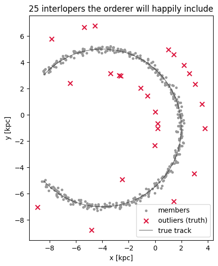
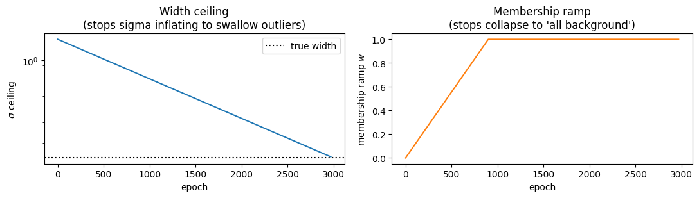
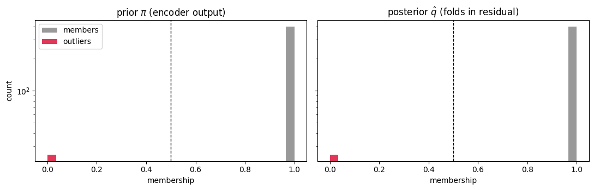
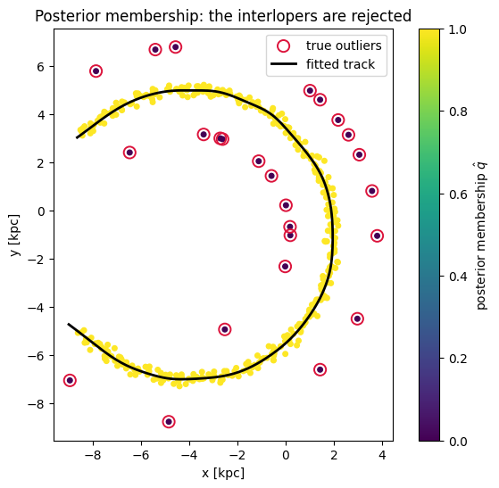

Outlier rejection with mixture-model membership#
The MST (or phase-flow walk) orders every tracer it is given. It is a spanning structure — it has no reject option, so an outlier simply gets attached by its cheapest edge and inherits a \(\gamma\) like everyone else.
The autoencoder ought to catch what the orderer cannot: it fits a track, so it knows how far each star lies from that track. By default it throws that information away — the membership head is trained as a classifier against uniform-in-box negatives, and no gradient ever connects “far from the track” to “not a member”.
This notebook shows the failure, and fixes it with the mixture model of Hogg, Bovy & Lang (2010), arXiv:1008.4686, §3 (“Pruning outliers”). The idea: treat every star as drawn from one of two populations, a narrow stream around the fitted track or a broad background of field stars, and let the data decide which is more likely for each star.
It helps to have seen the stream autoencoder tutorial first, which introduces the encoder, the decoder and the ordering coordinate \(\gamma\).
[1]:
import equinox as eqx
import jax
import jax.numpy as jnp
import jax.random as jr
import matplotlib.pyplot as plt
import numpy as np
import optax
from phasecurvefit.nn import (
MixtureMembershipConfig,
membership_rampup,
membership_responsibility,
mixture_membership_loss,
sigma_ceiling,
)
jax.config.update("jax_enable_x64", True)
A stream with outliers#
An arc — the shape of a tidal tail — contaminated with interlopers. The outliers sit well off the track and carry velocities uncorrelated with the stream, which is what a field star looks like.
[2]:
N_MEMBER, N_OUTLIER, WIDTH = 400, 25, 0.15
g = jnp.linspace(-1.0, 1.0, N_MEMBER)
theta = g * 2.4 # ~270 degrees of arc
track = jnp.stack([6 * jnp.cos(theta) - 4, 6 * jnp.sin(theta) - 1], axis=-1)
tangent = jnp.stack([-jnp.sin(theta), jnp.cos(theta)], axis=-1)
normal = jnp.stack([jnp.cos(theta), jnp.sin(theta)], axis=-1)
q_member = track + WIDTH * jr.normal(jr.key(1), (N_MEMBER, 2))
v_member = tangent + 0.05 * jr.normal(jr.key(2), (N_MEMBER, 2))
# Interlopers: ~12 stream-widths off the track, with random velocities.
idx = jr.randint(jr.key(3), (N_OUTLIER,), 0, N_MEMBER)
offset = 12.0 * WIDTH * jnp.sign(jr.normal(jr.key(4), (N_OUTLIER, 1)))
q_outlier = track[idx] + offset * normal[idx]
v_outlier = jr.normal(jr.key(5), (N_OUTLIER, 2))
v_outlier = v_outlier / jnp.linalg.norm(v_outlier, axis=1, keepdims=True)
QS = jnp.concatenate([q_member, q_outlier])
VS = jnp.concatenate([v_member, v_outlier])
WS = jnp.concatenate([QS, VS], axis=-1)
# The orderer hands the outliers a gamma too. That is the whole problem.
GAMMA_TARGET = jnp.concatenate([g, g[idx]])
is_outlier = jnp.concatenate(
[jnp.zeros(N_MEMBER, dtype=bool), jnp.ones(N_OUTLIER, dtype=bool)]
)
out = np.asarray(is_outlier)
print(f"{N_MEMBER} members (width {WIDTH}) + {N_OUTLIER} outliers")
400 members (width 0.15) + 25 outliers
[3]:
fig, ax = plt.subplots(figsize=(7, 6))
ax.scatter(*q_member.T, s=8, c="0.6", label="members")
ax.scatter(
*q_outlier.T, s=45, c="crimson", marker="x", lw=1.6, label="outliers (truth)"
)
ax.plot(*track.T, "k-", lw=1, alpha=0.5, label="true track")
ax.set(
xlabel="x [kpc]",
ylabel="y [kpc]",
aspect="equal",
title="25 interlopers the orderer will happily include",
)
ax.legend()
plt.show()

Fitting#
To keep the notebook fast and self-contained we drive the membership functions directly rather than running the full three-phase train_autoencoder. The pieces are exactly the ones the library uses, so the behaviour is what TrainingConfig(membership=...) gives you.
[4]:
class Encoder(eqx.Module):
"""(x, v) -> (gamma, pi). Stand-in for OrderingNet."""
mlp: eqx.nn.MLP
def __init__(self, key):
self.mlp = eqx.nn.MLP(4, 2, 64, 3, activation=jax.nn.tanh, key=key)
def __call__(self, w):
"""Encode phase-space point to (gamma, pi) coordinates."""
out = self.mlp(w)
return jnp.tanh(out[0]), jax.nn.sigmoid(out[1])
class Decoder(eqx.Module):
"""gamma -> x. Stand-in for TrackNet."""
mlp: eqx.nn.MLP
def __init__(self, key):
self.mlp = eqx.nn.MLP("scalar", 2, 64, 3, activation=jax.nn.tanh, key=key)
def __call__(self, gamma):
"""Decode ordering parameter to position prediction."""
return self.mlp(gamma)
The likelihood#
Each star \(n\) has a position \(q_n\) and, from the encoder, an ordering coordinate \(\gamma_n\) and a membership prior \(\pi_n\). The decoder places it on the track at \(x_\theta(\gamma_n)\). The mixture likelihood is
a Gaussian stream of width \(\sigma\) around the track, plus a uniform background of density \(\rho_{\mathrm{bg}}\) (estimated from the footprint of the data). The width \(\sigma\) is itself learned, by a small network, as a function of \(\gamma\).
fit below minimises \(-\sum_n \log \mathcal{L}_n\) plus one more term, an anchor that keeps each star’s \(\gamma_n\) close to the orderer’s value. The anchor is weighted by each star’s current membership, so outliers stop pulling on the ordering as soon as the model doubts them. This alternation, weighting by membership and then refitting, is the M-step of the expectation-maximisation algorithm.
[5]:
def fit(cfg, data=None, n_epochs=3000, *, key=None):
"""Fit encoder + decoder + stream width jointly, under the mixture likelihood."""
if key is None:
key = jr.key(10)
ws, qs, gamma_target = data if data is not None else (WS, QS, GAMMA_TARGET)
k1, k2, k3 = jr.split(key, 3)
mask = jnp.ones(len(ws), dtype=bool)
log_bg = float(jnp.log(cfg.resolve_background_density(qs)))
params = (Encoder(k1), Decoder(k2), cfg.make_width_net(key=k3))
dyn, static = eqx.partition(params, eqx.is_array)
opt = optax.adam(3e-3)
opt_state = opt.init(dyn)
def loss_fn(dyn, ceiling, ramp):
encoder, decoder, width = eqx.combine(dyn, static)
gamma, pi = jax.vmap(encoder)(ws)
qs_pred = jax.vmap(decoder)(gamma)
sigma = jnp.minimum(jax.vmap(width)(gamma), ceiling)
nll, resp = mixture_membership_loss(
qs, qs_pred, pi, sigma, mask, log_bg_density=log_bg, rampup=ramp
)
# Anchor gamma to the ordering, weighted by responsibility: the M-step.
w = jax.lax.stop_gradient(resp)
anchor = jnp.sum(w * (gamma_target - gamma) ** 2) / jnp.sum(w)
return nll + anchor
def body(carry, i):
dyn, opt_state = carry
ceiling = sigma_ceiling(
i, n_epochs, start=cfg.sigma_ceiling[0], stop=cfg.sigma_ceiling[1]
)
ramp = membership_rampup(i, n_epochs, warmup_frac=cfg.warmup_frac)
loss, grads = jax.value_and_grad(loss_fn)(dyn, ceiling, ramp)
updates, opt_state = opt.update(grads, opt_state, dyn)
return (eqx.apply_updates(dyn, updates), opt_state), loss
(dyn, _), losses = jax.lax.scan(body, (dyn, opt_state), jnp.arange(n_epochs))
encoder, decoder, width = eqx.combine(dyn, static)
gamma, pi = jax.vmap(encoder)(ws)
qs_pred = jax.vmap(decoder)(gamma)
sigma = jnp.minimum(jax.vmap(width)(gamma), jnp.asarray(cfg.sigma_ceiling[1]))
r2 = jnp.sum((qs - qs_pred) ** 2, axis=-1)
resp = membership_responsibility(pi, r2, sigma, log_bg_density=log_bg, n_dims=2)
return {
"pi": pi,
"posterior": resp,
"sigma": sigma,
"decoder": decoder,
"losses": losses,
}
The two schedules#
Each closes off one degenerate optimum of the mixture likelihood. They are structural, not tuning knobs:
``sigma_ceiling`` anneals a cap on the stream width downward. Without it, the likelihood would rather widen the stream to swallow nearby outliers than lower their membership.
``warmup_frac`` ramps the membership term in from zero. Without it, the model can declare the whole field background before the track has fitted — and once \(\pi = 0\) everywhere, no gradient reaches the decoder and training is dead.
[6]:
cfg = MixtureMembershipConfig(
sigma_init=0.3,
sigma_ceiling=(1.5, 0.15), # anneal the width ceiling DOWN
warmup_frac=0.3, # fit the track before rejecting anything
)
e = np.arange(0, 3000, 30)
ceil = [float(sigma_ceiling(int(i), 3000, start=1.5, stop=0.15)) for i in e]
ramp = [float(membership_rampup(int(i), 3000, warmup_frac=0.3)) for i in e]
fig, (a1, a2) = plt.subplots(1, 2, figsize=(11, 3.2))
a1.plot(e, ceil, "C0")
a1.axhline(WIDTH, ls=":", c="k", label="true width")
a1.set(
xlabel="epoch",
ylabel=r"$\sigma$ ceiling",
yscale="log",
title="Width ceiling\n(stops sigma inflating to swallow outliers)",
)
a1.legend()
a2.plot(e, ramp, "C1")
a2.set(
xlabel="epoch",
ylabel="membership ramp $w$",
title="Membership ramp\n(stops collapse to 'all background')",
)
plt.tight_layout()
plt.show()

[7]:
fitted = fit(cfg)
print(f"final loss : {float(fitted['losses'][-1]):.4f}")
print(
f"recovered stream width: {float(jnp.median(fitted['sigma'])):.3f} (true {WIDTH})"
)
final loss : 0.5071
recovered stream width: 0.150 (true 0.15)
Prior vs posterior#
This is the crux. The encoder’s raw pi is only a prior: what it believes from the star’s coordinates alone, before seeing how far the star actually landed from the track. The posterior folds in the residual.
Only the posterior separates.
[8]:
pi = np.asarray(fitted["pi"])
post = np.asarray(fitted["posterior"])
fig, (a1, a2) = plt.subplots(1, 2, figsize=(11, 3.6), sharey=True)
bins = np.linspace(0, 1, 30)
panels = [
(a1, pi, r"prior $\pi$ (encoder output)"),
(a2, post, r"posterior $\hat{q}$ (folds in residual)"),
]
for ax, vals, name in panels:
ax.hist(vals[~out], bins=bins, color="0.6", label="members", log=True)
ax.hist(
vals[out], bins=bins, color="crimson", alpha=0.85, label="outliers", log=True
)
ax.axvline(0.5, ls="--", c="k", lw=1)
ax.set(xlabel="membership", title=name)
a1.set_ylabel("count")
a1.legend()
plt.tight_layout()
plt.show()
print(f"outliers flagged (posterior < 0.5): {int((post[out] < 0.5).sum())}/{N_OUTLIER}")
print(f"genuine members wrongly cut : {int((post[~out] < 0.5).sum())}/{N_MEMBER}")

outliers flagged (posterior < 0.5): 25/25
genuine members wrongly cut : 0/400
The result#
Colour by posterior membership: the interlopers go dark, the stream stays bright.
[9]:
gam = jnp.linspace(-1, 1, 400)
track_fit = np.asarray(jax.vmap(fitted["decoder"])(gam))
fig, ax = plt.subplots(figsize=(7.5, 6))
sc = ax.scatter(*np.asarray(QS).T, c=post, cmap="viridis", s=16, vmin=0, vmax=1)
ax.scatter(
*np.asarray(QS)[out].T,
s=90,
facecolors="none",
edgecolors="crimson",
lw=1.4,
label="true outliers",
)
ax.plot(*track_fit.T, "k-", lw=2, label="fitted track")
ax.set(
xlabel="x [kpc]",
ylabel="y [kpc]",
aspect="equal",
title="Posterior membership: the interlopers are rejected",
)
plt.colorbar(sc, ax=ax, label=r"posterior membership $\hat{q}$")
ax.legend()
plt.show()

What happens without the warm-up#
The membership ramp is not a nicety — but you have to push it to see why. At the 12 σ contamination above, the model gets away without a warm-up. Move the interlopers out to 20 σ and the failure appears.
At initialisation the decoded track is meaningless, so every star has a huge residual. With no ramp, the likelihood’s cheapest move is to declare the whole dataset background: \(\pi_n \to 0\) everywhere. But once \(\pi_n = 0\) the stream component carries no weight, no gradient reaches the decoder, the track drifts freely, residuals grow, and \(\pi\) is pinned at zero forever. Training collapses to “there is no stream” — and takes all 400 genuine members with it.
[10]:
# A harder field: interlopers at 20 stream-widths instead of 12.
offset_hard = 20.0 * WIDTH * jnp.sign(jr.normal(jr.key(4), (N_OUTLIER, 1)))
qs_hard = jnp.concatenate([q_member, track[idx] + offset_hard * normal[idx]])
ws_hard = jnp.concatenate([qs_hard, VS], axis=-1)
data_hard = (ws_hard, qs_hard, GAMMA_TARGET)
warm = fit(
MixtureMembershipConfig(sigma_init=0.3, sigma_ceiling=(1.5, 0.15), warmup_frac=0.3),
data_hard,
)
cold = fit(
MixtureMembershipConfig(sigma_init=0.3, sigma_ceiling=(1.5, 0.15), warmup_frac=0.0),
data_hard,
)
print(f"{'':24s} {'outliers caught':>16s} {'members lost':>15s}")
for name, res in [("with warm-up (0.3)", warm), ("no warm-up", cold)]:
p = np.asarray(res["posterior"])
print(
f"{name:24s} {int((p[out] < 0.5).sum()):>12d}/{N_OUTLIER}"
f" {int((p[~out] < 0.5).sum()):>12d}/{N_MEMBER}"
)
print("\n^ without the ramp, membership collapses and the whole stream is rejected.")
outliers caught members lost
with warm-up (0.3) 25/25 0/400
no warm-up 25/25 400/400
^ without the ramp, membership collapses and the whole stream is rejected.
Using it for real#
Everything above is what TrainingConfig(membership=...) does for you inside train_autoencoder. Here is the same fit through the public API, end to end, on the same data.
The library works with named, unitful components, so we wrap the arrays as unxt quantities. We order the stars with an MSTOrderer (see the MST tutorial) — it threads the interlopers into the ordering just as described at the top of this notebook — and then let the autoencoder’s mixture-model membership reject them. Note that sigma_init and sigma_ceiling are in the normalised coordinates the model trains in, not in kpc.
[11]:
import unxt as u
import phasecurvefit as pcf
usys = u.unitsystems.galactic
qs = {"x": u.Q(QS[:, 0], "kpc"), "y": u.Q(QS[:, 1], "kpc")}
ps = {"x": u.Q(VS[:, 0], "kpc/Myr"), "y": u.Q(VS[:, 1], "kpc/Myr")}
# 1. Order the stars. The orderer has no reject option: the outliers get a gamma too.
walkresult = pcf.orderers.MSTOrderer(
k=16, orient_by_velocity=True, on_disconnected="largest"
).order(qs, ps, metadata=pcf.StateMetadata(usys=usys))
# 2. Build the autoencoder and train it with mixture-model membership.
model_key, train_key = jr.split(jr.key(0))
normalizer = pcf.nn.StandardScalerNormalizer(qs, ps)
model = pcf.nn.PathAutoencoder.make(
normalizer, gamma_range=walkresult.gamma_range, key=model_key
)
membership = pcf.nn.MixtureMembershipConfig(
sigma_init=0.1, # your guess at the stream width (normalised units)
sigma_ceiling=(0.5, 0.1), # anneal the width ceiling down
warmup_frac=0.3, # fit the track before rejecting anything
)
config = pcf.nn.TrainingConfig(n_epochs_both=2000, membership=membership)
result, opt_states, losses = pcf.nn.train_autoencoder(
model, walkresult, config=config, key=train_key
)
# 3. Calibrated posterior membership -- NOT the encoder's raw `prob`.
# `posterior_membership` expects coordinates in the normalised training frame.
qn, pn = result.model.normalizer.transform(qs, ps)
ws = jnp.concatenate([qn, pn], axis=1)
q = pcf.nn.posterior_membership(result.model, ws)
members = np.asarray(q > 0.5)
print(f"outliers flagged (posterior < 0.5): {int((~members[out]).sum())}/{N_OUTLIER}")
print(f"genuine members wrongly cut : {int((~members[~out]).sum())}/{N_MEMBER}")
outliers flagged (posterior < 0.5): 25/25
genuine members wrongly cut : 400/400
Leaving membership=None (the default) preserves the existing behaviour exactly.
See the outlier-rejection guide for the full argument, and Hogg, Bovy & Lang (2010), arXiv:1008.4686, §3 for the statistics.
Takeaways#
Orderers have no reject option, and the default membership classifier ignores the distance from the track, so outliers survive as “members”.
The mixture model makes membership depend on that distance, and the posterior from
posterior_membership, not the encoder’s rawprob, is the number to use.The two schedules,
sigma_ceilingandwarmup_frac, each block a way the mixture fit can go wrong; keep them on.Hogg et al. recommend using the posterior as a weight rather than cutting at 0.5; the MST tutorial shows why, on a real stream.